Activity: Placing parts in an assembly with FlashFit
Activity
In this activity, you will learn the procedure for positioning parts in an assembly using FlashFit to achieve the relationships of Mate, Planar Align and Axial Align.
Click here to download the parts and assembly files for the activity.
If you are using Internet Explorer and a video is not displaying in your training guide, click the Tools tab (or gear icon)→Compatibility View settings, and then clear the selection of Display intranet sites in Compatibility View.
Overview
In this activity, FlashFit is used to position parts in a valve assembly.
Objectives
The objective of this activity is for you to be able to use appropriate relationships to position parts in an assembly.
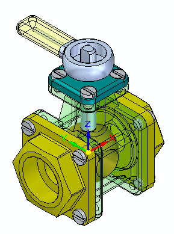
Create a new assembly and place the first part.
Create a new ISO metric assembly file.
Click the Insert Component, click the Parts Library and drag st_v_housing.par into the assembly window. The first part placed in a new assembly file is grounded.
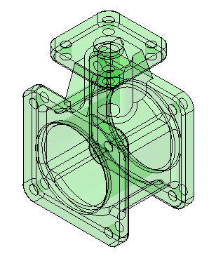
Use FlashFit to position the valve parts. Before placing additional parts, set the FlashFit parameters. Once the parameters are set, the part will be positioned.
From the Parts Library, drag the subassembly st_v_handleball.asm into the assembly window.
Click the Options button on the command bar.
Set the Options shown and then click OK.
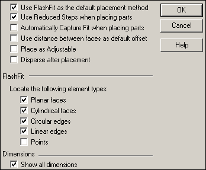
Set the relationship type to FlashFit .
Select the circular edge shown. Use QuickPick for an accurate selection.
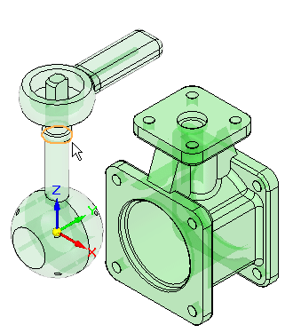
Matching circular edges with FlashFit is the equivalent of using the Insert command. A Mate relationship, and an Axial Align relationship with locked rotation is created.
Select the inner lip of the center hole of the housing.
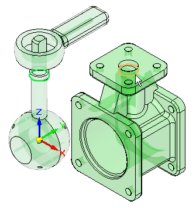
The subassembly is positioned.
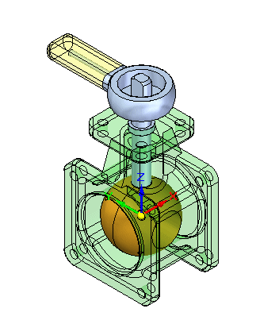
Place additional parts in the assembly until finished.
Drag st_v_endplate.par into the assembly window.
Use QuickPick to select the face shown.
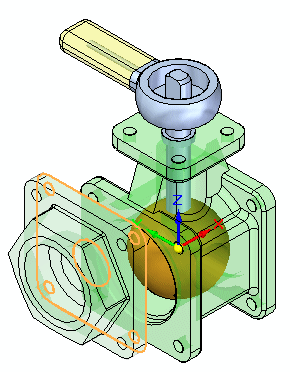
Select the target face on the housing as shown. A Mate relationship is applied.
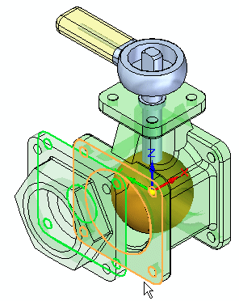
The next two relationships will be established using alignment of holes in the parts. Select the cylindrical axis on the st_v_endplate.par as shown.
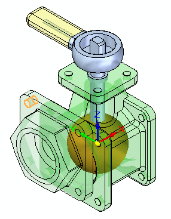
For the target, select the cylindrical axis shown. An Axial Align relationship is applied.
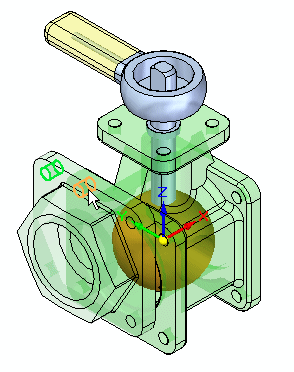
For the last relationship needed to completely position the part, select the cylindrical axis shown.
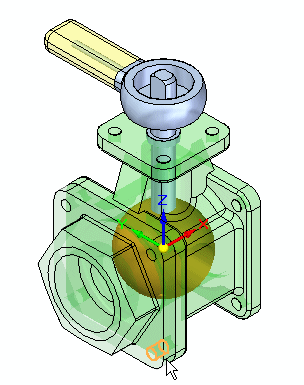
For the target, select the cylindrical axis shown. An Axial Align relationship is applied and the part is positioned.
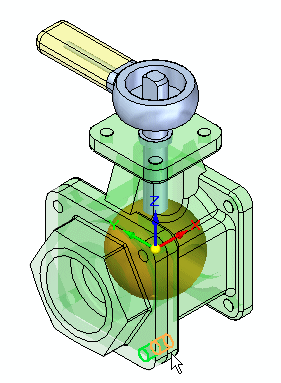
Drag another occurrence of st_v_endplate.par into the assembly window.
Place st_v_endplate.par on the opposite side of the housing from the one just place using the same procedure you used to place the previous part.
FlashFit will assign either a Mate or a Planar Align to flat faces based on the closest orientation of the two faces being positioned. In this case, if a Planar Align is assigned rather than a Mate, use the flip button to change the relationship type to a Mate.
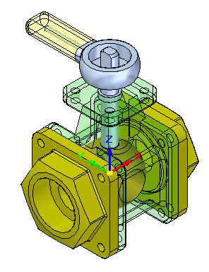
Drag st_v_top.par into the assembly window.
Use FlashFit to position st_v_top.par as shown. The procedure is similar to the one used to place the previous two parts.
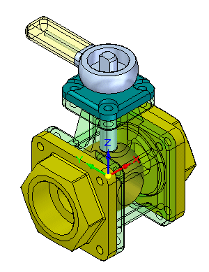
Drag 10mm_fastener.par into the assembly window.
Using QuickPick, select the circular edge shown.
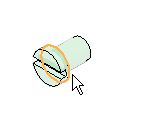
For the target, select the circular edge shown on the top cap. The fastener is placed.
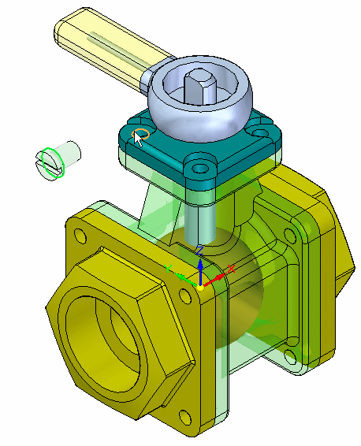
Place additional occurrences of 10mm_fastener.par in the remaining holes on the valve using the same procedure.
If FlashFit positions the fasteners incorrectly as shown, follow the steps outlined to correct the placement. The reason for the incorrect placement of the fastener is that FlashFit determines whether to apply a Planar Align or a Mate relationship to the fastener based on the orientation of the face relative to the placement face. If the part faces are closer to a Planar Align relationship, then that is what is applied. Prior to selecting the circular edges in FlashFit, the fastener can be rotated into the approximate desired orientation by holding Ctrl while dragging it. This will result in correct placement and is easier than correcting the placement using Flip outlined below.
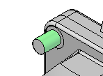
Click the Select command .
Select the fastener.
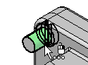
In the lower pane of PathFinder, right-click the Planar Align relationship, and then click Flip.
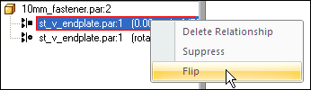
This completes the activity.
Close the assembly document without saving.
In this activity you learned how to place parts and subassemblies from a Parts Library and position them in an assembly. FlashFit consists of the Mate, Planar Align and Axial Align relationships and determines which is appropriate. When using FlashFit and selecting circular edges, fasteners can quickly be positioned because the rotation of the fastener is locked and the part becomes fully constrained.
Click the Close button in the upper-right corner of the activity window.